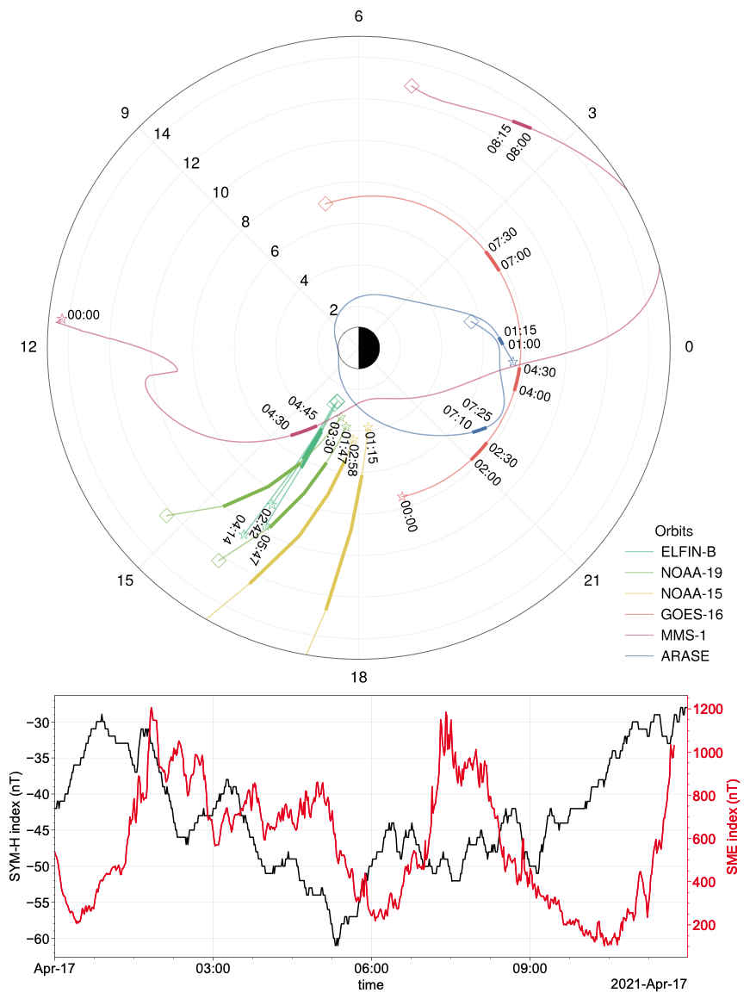

Dynamics of EMIC Waves and Their Influence on Radiation Belt Electron Fluxes
PhD Candidate: Zijin Zhang
Abstract
Electromagnetic Ion Cyclotron (EMIC) waves and whistler waves are fundamental plasma wave phenomena in Earth’s magnetosphere, influencing the dynamics of radiation belts through interactions with energetic electrons. These interactions often lead to significant modulation of electron fluxes, with chorus waves accelerating electrons to relativistic energies (Miyoshi et al. 2003; Sorathia et al. 2018) and EMIC & whistler waves causing electron losses through pitch angle scattering (Summers and Thorne 2003; Summers, Ni, and Meredith 2007b). This study aims to deepen the understanding of how these waves, in concert with other phenomena like plasma sheet injections, impact the behavior of radiation belt electrons. Leveraging extensive datasets from satellites such as the Van Allen Probes, ERG (Arase), MMS, and ELFIN, this study will conduct a comprehensive analysis of wave properties, and the resulting effects on electron fluxes. By integrating observational data with advanced simulation techniques, the project seeks to enhance current models of radiation belt dynamics, improving predictions of space weather effects.
Background and Motivation
Interactions of Waves with Radiation Belt Electrons
Relativistic electron fluxes in Earth’s inner magnetosphere are greatly affected by electron scattering to the atmosphere via resonant interactions with whistler-mode and electromagnetic ion cyclotron (EMIC) waves (Millan and Thorne 2007; Summers, Ni, and Meredith 2007a). Near the loss-cone, electron scattering rates for EMIC waves at such energies are much larger than for whistler-mode waves (Glauert and Horne 2005). Thus, EMIC wave-driven electron precipitation is considered a key contributor to relativistic electron losses at energies exceeding the minimum energy for cyclotron resonance with such waves, \(E_{\min}\sim 0.5-1\) MeV (Summers and Thorne 2003; Summers, Ni, and Meredith 2007b). Numerical simulations of the outer radiation belt dynamics (Ma et al. 2015) and data-model comparisons (Angelopoulos et al. 2023) have demonstrated that EMIC waves can scatter relativistic electrons efficiently and deplete their fluxes quickly in the outer radiation belt.
For energies below ultra-relativistic energies (below several MeV) and for typical plasma characteristics, EMIC wave-driven electron scattering mostly affects low pitch-angle electrons (equatorial \(\alpha_{eq}<30^\circ\), see Kersten et al. 2014). Therefore, additional high pitch-angle electron scattering by whistler-mode waves is required to assist EMIC waves in the precipitation of the main, near-equatorial, (trapped) electron population (Mourenas et al. 2016). A combination of electron scattering by whistler-mode and EMIC waves at the same \(L\)-shell (even if at different longitudes) can result in a very effective electron flux depletion (Mourenas et al. 2016; Drozdov et al. 2022). Verification of this electron loss mechanism requires a combination of satellites near the equator (to measure the waves and equatorial pitch-angle electron fluxes) and at low-altitude (to measure precipitating electron fluxes).
Origin and Characteristics of Waves
EMIC waves are often generated by anisotropic ion populations from plasma sheet injections . These injections also create anisotropic “seed” electrons , the free energy source for whistler-mode chorus waves . Such chorus waves can effectively accelerate the same seed electrons to relativistic energies (Miyoshi et al. 2003; Thorne et al. 2013; Mourenas et al. 2014; Allison and Shprits 2020). Therefore, there is a competition between electron acceleration by whistler-mode waves (supported by direct adiabatic heating during injections, see, e.g. Sorathia et al. 2018) and electron precipitation by EMIC and chorus waves, and this competition should ultimately shape the energy spectrum of radiation belt electrons after a series of plasma sheet injections. Several recent publications indicate that the electron energy spectrum may have an upper limit corresponding to a balance between electron injections and precipitation loss, controlled by whistler-mode waves (Olifer et al. 2021, 2022). The existence of such an upper limit has been predicted by Kennel and Petschek (1966), and reevaluated for relativistic electrons by Summers, Tang, and Thorne (2009) and Summers and Shi (2014). Several of its main assumptions have been verified using ELFIN data (Mourenas et al. 2024). The Kennel-Petschek upper limit is based on the idea that injected electrons generate whistler-mode waves (with exponentially higher wave power for electron fluxes above the flux limit) that ultimately scatter these same injected electrons into the atmosphere. The competition between linearly increasing anisotropic electron fluxes and exponentially faster electron losses into the atmosphere due to exponentially increasing wave growth, leads to a stationary solution in the diffusion (Fokker-Planck) equation describing electron flux dynamics. Inclusion of EMIC wave-driven loss into this balance reduces the upper limit of the electron flux at high energy (Mourenas et al. 2022).
Role of EMIC Waves in Space Weather
Understanding the interactions between EMIC waves and radiation belt electrons is crucial for predicting space weather effects, particularly since these interactions can lead to rapid changes in radiation belt configurations, posing risks to satellites and other space-based technologies (Baker et al., 2004; Horne et al., 2005). The 2003 Halloween storm provided a clear example of how enhanced EMIC wave activity correlated with significant radiation belt electron flux decreases, highlighting the importance of including these waves in predictive models (Turner et al., 2012).
Gaps in Current Understanding
Despite significant advances, there remain substantial gaps in our understanding of what roles these coexistent waves with concurrent processes (plasma sheet injections) play in modifying these interactions with energetic particles. The proposed study aims to bridge these gaps by combining observational data analysis with theoretical modeling efforts.
This enriched background sets a solid foundation for investigating the interactions of EMIC & whitler waves with radiation belt electrons and underscores the importance of this research in advancing our understanding of magnetospheric physics and improving our ability to forecast space weather impacts effectively.
Proposed Data and Detailed Analysis Approach
Data Acquisition and Sources
ELFIN CubeSat: Employ low-altitude measurements from the ELFIN CubeSat to quantify the effects of EMIC waves on electron precipitation. ELFIN’s unique orbital characteristics allow it to measure loss cone distributions and provide a direct measure of wave-driven electron losses, enhancing our understanding of wave-particle interaction dynamics in the radiation belts.
Van Allen Probes: Utilize extensive datasets from the Van Allen Probes, which include electric and magnetic field measurements, plasma wave spectra, and particle detection (electron and ion fluxes) across different energy ranges. These data are essential for directly observing EMIC waves and assessing their interactions with radiation belt electrons during different geomagnetic conditions.
ERG (Arase) Satellite: Draw upon high-resolution data from the ERG satellite, which offers crucial insights into the inner magnetosphere’s dynamics. ERG’s suite of instruments provides critical measurements of electron density, electric fields, and magnetic fields that help identify the conditions conducive to EMIC wave generation and propagation.
Magnetospheric Multiscale (MMS) Mission: Analyze high-resolution data from the MMS mission, which is key for understanding the microphysics of wave-particle interactions, especially during short-duration events and smaller spatial scales that are not resolved by other satellites.
Analytical Methods
Wave-Particle Interaction Analysis: Use phase space density calculations and quasi-linear theory to analyze how EMIC waves scatter radiation belt electrons into the loss cone, leading to precipitation. This method helps in quantifying the diffusion coefficients which are critical for understanding the rate and extent of electron flux changes.
Event Selection and Case Studies: Identify specific events during which intense EMIC wave activity coincides with significant changes in electron fluxes. These events will be used as case studies to analyze the interaction mechanisms in detail, employing cross-spectral analysis to examine the coherence between EMIC waves and electron flux oscillations.
Simulation and Modeling
- Diffusion Model Enhancement: Integrate the latest empirical models of EMIC wave properties into existing radiation belt simulation frameworks. This will involve updating the wave spectral characteristics and amplitudes based on observed data, thus refining the models used to predict electron dynamics under various space weather conditions.
- Model Validation and Iterative Refinement: Employ a systematic approach to compare simulated results with satellite observations. This iterative process of validation and refinement is essential to improve the reliability and accuracy of predictive models, ensuring they are robust under a wide range of space weather scenarios.
Research Questions Addressed
- Mechanism Elucidation: How exactly do these waves together influence electron pitch angles and energies, and under what specific conditions do these interactions lead to net electron losses or gains?
- Modeling Improvements: Can the integration of enhanced EMIC wave models into simulation frameworks improve the accuracy of forecasts regarding electron dynamics in the radiation belts?
By addressing these questions through a detailed analytical and simulation-based approach, the proposed research aims to significantly advance our understanding of EMIC waves’ role in radiation belt dynamics.
Expected Contributions
This research project is poised to make contributions to our understanding of magnetospheric dynamics, particularly in relation to how EMIC&whistler waves influence radiation belt electrons. The integration of empirical data from multiple satellite sources with advanced simulation techniques aims to create a robust analytical framework capable of deciphering the complex interactions within Earth’s magnetosphere. Specific expected contributions include:
Empirical Analysis of Wave-Particle Interactions: By leveraging data from the Van Allen Probes, ERG, MMS, and ELFIN, this study will provide comprehensive empirical insights into how EMIC waves interact with radiation belt electrons. This will include detailed case studies where EMIC wave activity is correlated with significant changes in electron fluxes, enhancing our empirical understanding of these critical interactions.
Advanced Theoretical Modeling: The development and enhancement of diffusion models that incorporate refined EMIC wave characteristics will offer new theoretical insights into the mechanisms driving electron dynamics in the radiation belts. This will facilitate a better understanding of the conditions under which EMIC waves lead to electron acceleration or loss, filling a significant gap in the current scientific literature.
Improved Predictive Capabilities for Space Weather: By refining simulation models to better predict the impacts of EMIC waves on radiation belt dynamics, this research will enhance our ability to forecast space weather effects, thereby contributing to more effective mitigation strategies for protecting satellites and other space-based technologies from adverse effects.
Discussion and Future Work
The findings from this research will deepen our understanding of magnetospheric physics, particularly the role of EMIC waves in electron dynamics. However, several questions are likely to emerge from this study, guiding future research efforts:
Wave Source Regions and Propagation: Further investigations may be required to identify the specific source regions of EMIC waves and their propagation characteristics through the magnetosphere. Understanding these aspects could enhance predictions of when and where EMIC waves will impact electron populations.
Interactions with Other Wave Modes: While this project focuses on EMIC waves, the magnetosphere contains multiple interacting wave modes. Future work could explore the interactions between EMIC waves and other wave types, such as ULF and VLF waves, to provide a more holistic view of the dynamics governing radiation belt electron fluxes.
Technological Applications: The development of real-time monitoring tools based on the findings from this research could be explored. These tools would use satellite data to provide immediate assessments of EMIC wave activity and its potential impacts, offering valuable information for satellite operators and space weather forecasters.
Summary
The proposed research is designed to tackle some of the most pressing questions in space physics regarding the impact of EMIC waves on radiation belt dynamics. Through a combination of detailed empirical analysis and advanced theoretical modeling, this project aims to provide significant insights and tools for predicting space weather, thereby contributing to our ability to safeguard and optimize the operation of space-based technologies.
Figures
